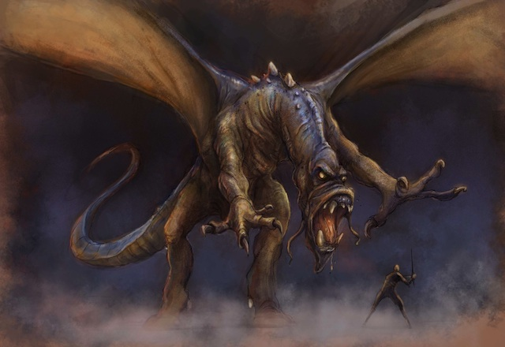
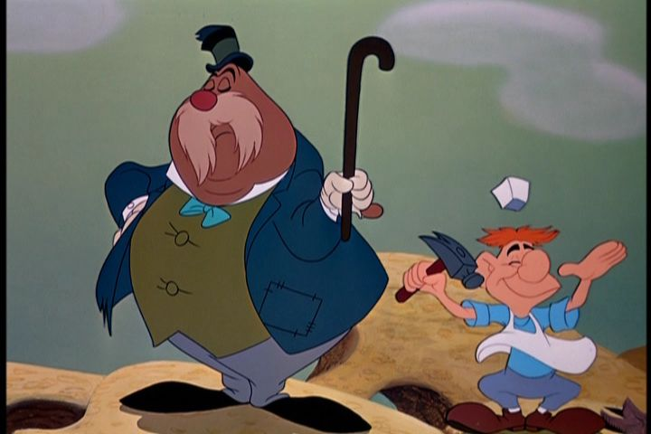
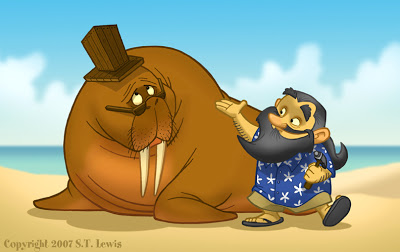

Poems by Lewis Carrol
Jabberwocky
- 'Twas brillig, and the slithy toves
- Did gyre and gimble in the wabe:
- All mimsy were the borogoves,
- And the mome raths outgrabe.

- 'Beware the Jabberwock, my son!
- The jaws that bite, the claws that catch!
- Beware the Jubjub bird, and shun
- The frumious Bandersnatch!'
- He took his vorpal sword in hand:
- Long time the manxome foe he sought --
- So rested he by the Tumtum tree,
- And stood a while in thought.
- And, as in uffish thought he stood,
- The Jabberwock, with eyes of flame,
- Came whiffling through the tulgey wood,
- And burbled as it came!
- One two! One two! And through and through
- The vorpal blade went snicker-snack!
- He left it dead, and with its head
- He went galumphing back.
- 'And hast thou slain the Jabberwock?
- Come to my arms, my beamish boy!
- Oh frabjous day! Callooh! Callay!'
- He chortled in his joy.
- 'Twas brillig, and the slithy toves
- Did gyre and gimble in the wabe:
- All mimsy were the borogoves,
- And the mome raths outgrabe.
The Walrus and the Carpenter
- The sun was shining on the sea,
- Shining with all his might:
- He did his very best to make
- The billows smooth and bright --
- And this was odd, because it was
- The middle of the night.

- The moon was shining sulkily,
- Because she thought the sun
- Had got no business to be there
- After the day was done --
- 'It's very rude of him.' she said,
- 'To come and spoil the fun!'
- The sea was wet as wet could be,
- The sands were dry as dry.
- You could not see a cloud, because
- No cloud was in the sky:
- No birds were flying overhead --
- There were no birds to fly.
- The Walrus and the Carpenter
- Were walking close at hand:
- They wept like anything to see
- Such quantities of sand:
- 'If this were only cleared away,'
- They said, 'it would be grand.'
- 'If seven maids with seven mops
- Swept it for half a year,
- Do you suppose,' the Walrus said,
- 'That they could get it clear?'
- 'l doubt it,' said the Carpenter,
- And shed a bitter tear.
- 'O Oysters, come and walk with us!
- The Walrus did beseech.
- 'A pleasant walk, a pleasant talk,
- Along the briny beach:
- We cannot do with more than four,
- To give a hand to each.'
- The eldest Oyster looked at him,
- But never a word he said:
- The eldest Oyster winked his eye,
- And shook his heavy head --
- Meaning to say he did not choose
- To leave the oyster-bed.
- Out four young Oysters hurried up.
- All eager for the treat:
- Their coats were brushed, their faces washed,
- Their shoes were clean and neat --
- And this was odd, because, you know,
- They hadn't any feet.
- Four other Oysters followed them,
- And yet another four;
- And thick and fast they came at last,
- And more, and more, and more --
- All hopping through the frothy waves,
- And scrambling to the shore.
- The Walrus and the Carpenter
- Walked on a mile or so,
- And then they rested on a rock
- Conveniently low:
- And all the little Oysters stood
- And waited in a row.
- 'The time has come,' the Walrus said,
- 'To talk of many things:
- Of shoes -- and ships -- and sealing wax --
- Of cabbages -- and kings --
- And why the sea is boiling hot --
- And whether pigs have wings.'
- 'But wait a bit,' the Oysters cried,
- 'Before we have our chat;
- For some of us are out of breath,
- And all of us are fat!'
- 'No hurry!' said the Carpenter.
- They thanked him much for that.
- 'A loaf of bread,' the Walrus said,
- 'Is what we chiefly need:
- Pepper and vinegar besides
- Are very good indeed --
- Now, if you're ready, Oysters dear,
- We can begin to feed.'

- 'But not on us!' the Oysters cried,
- Turning a little blue.
- 'After such kindness, that would be
- A dismal thing to do!'
- 'The night is fine,' the Walrus said,
- 'Do you admire the view?'
- 'It was so kind of you to come!
- And you are very nice!'
- The Carpenter said nothing but
- 'Cut us another slice-
- I wish you were not quite so deaf-
- I've had to ask you twice!'
- 'It seems a shame,' the Walrus said,
- 'To play them such a trick.
- After we've brought them out so far,
- And made them trot so quick!'
- The Carpenter said nothing but
- 'The butter's spread too thick!'
- 'I weep for you,'the Walrus said:
- 'I deeply sympathize.'
- With sobs and tears he sorted out
- Those of the largest size,
- Holding his pocket-handkerchief
- Before his streaming eyes.
- 'O Oysters,' said the Carpenter,
- 'You've had a pleasant run!
- Shall we be trotting home again?'
- But answer came there none --
- And this was scarcely odd, because
- They'd eaten every one.